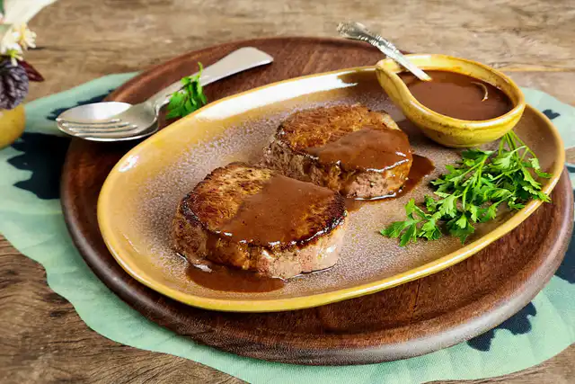

Medallion With Madeira Sauce

Description
A classic restaurant and wedding dish prepared in your own kitchen – and best of all – in about fifteen minutes.
You can schedule your romantic dinner knowing the menu is sorted. A tip: before you start, gather all the ingredients.
Since the preparation is very quick, this way you won't risk getting confused.
This recipe comes from Rita Lobo's Panelinha
website.
Medallion
Ingredients
- 2 filet mignon medallions (150 g each)
- ½ tablespoon olive oil
- Salt and freshly ground black pepper to taste
Steps
-
Remove the filet mignon from the refrigerator and let it sit at room temperature for a few minutes – it cannot
be cold when it goes into the pan.
-
Season the medallions with salt and pepper to taste. Heat a skillet over medium heat. When the skillet is very
hot, drizzle with olive oil and swirl to coat the bottom. Arrange the two medallions side by side and sear for
3 minutes per side – the meat will be golden brown on the outside and rare in the center.
- Transfer the medallions to a plate and cover with aluminum foil to keep warm while you prepare the sauce.
Sauce
Ingredients
- ½ tablespoon butter
- ½ tablespoon all-purpose flour
- ½ tablespoon tomato paste
- ¼ cup red wine
- ½ cup boiling water
- Salt and freshly ground black pepper to taste
Steps
-
In the same skillet where the medallions were browned, add the butter and heat over medium heat. Note: do not wash the skillet;
the browned bits from the meat will flavor the sauce. Once melted, add the flour and mix well for 2 minutes to form a paste.
-
Add the tomato paste and stir for 1 minute, scraping the bottom of the skillet with a spatula to dissolve the browned bits and
give the roux a rusty color.
-
Add the wine and stir to break up any lumps of flour (use a whisk if you prefer). Stir in the boiling water, season with salt and
pepper, and cook until the sauce reduces and thickens slightly – this takes about 2 minutes. Check the consistency with a spoon: the
sauce should form a shiny layer on the back of the spoon. Serve immediately over the medallions.
Back to Index